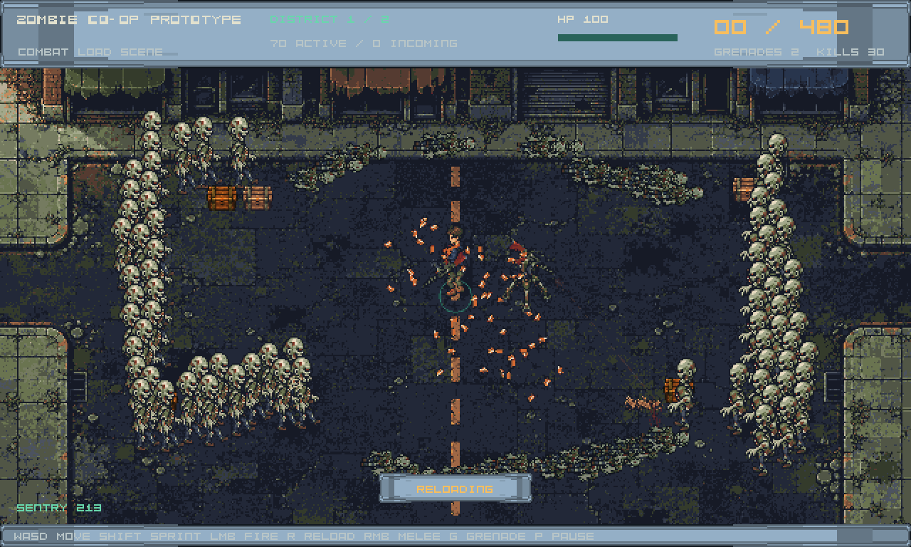
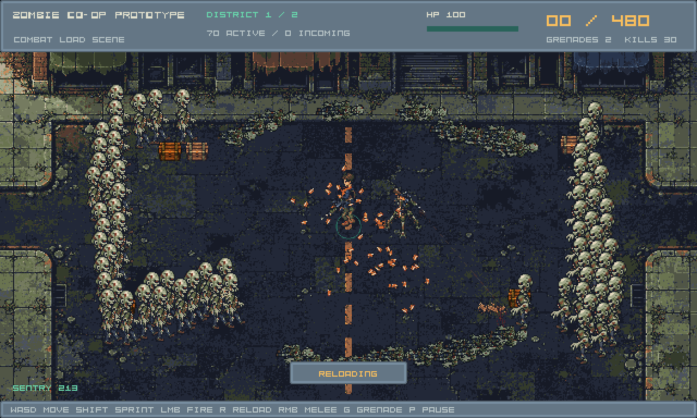
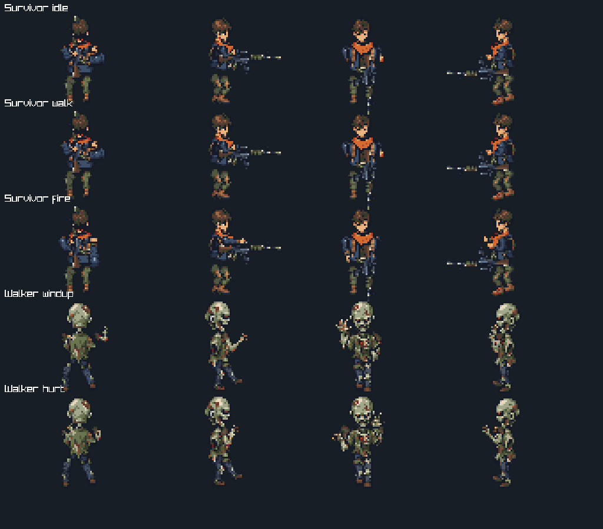
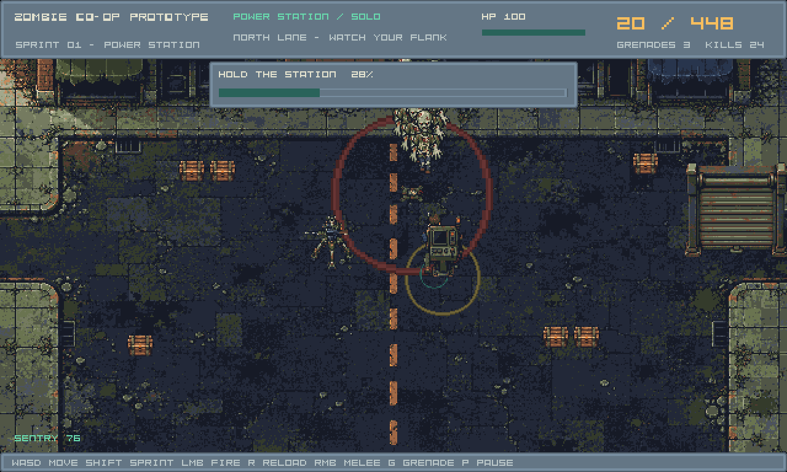
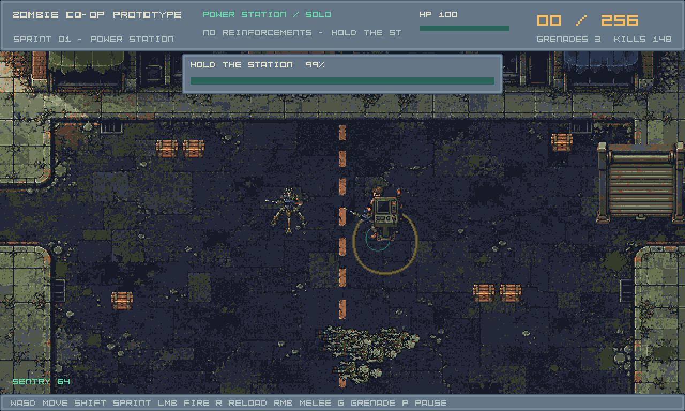

Captured evidence
Existing captures; opening this page does not run the game or create new acceptance evidence.













LOCAL BUILD
Evidence only. No game executable or launcher is recorded in this version.
No executable recordedRecorded reports describe their original snapshot. Technical checks do not establish human art, gameplay or performance acceptance.
Existing captures; opening this page does not run the game or create new acceptance evidence.




